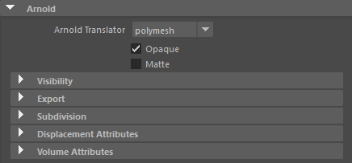
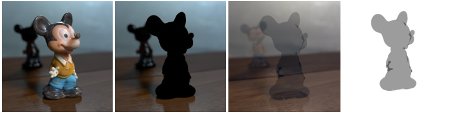
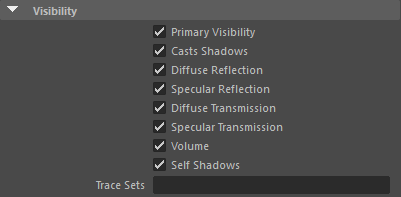
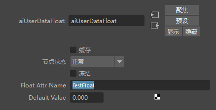
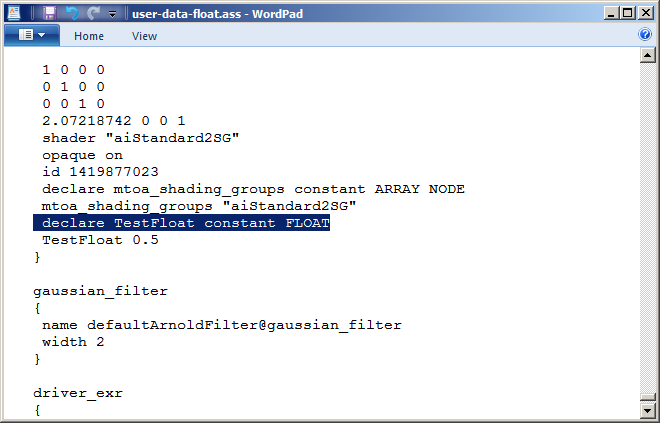
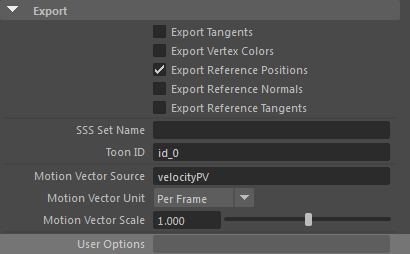
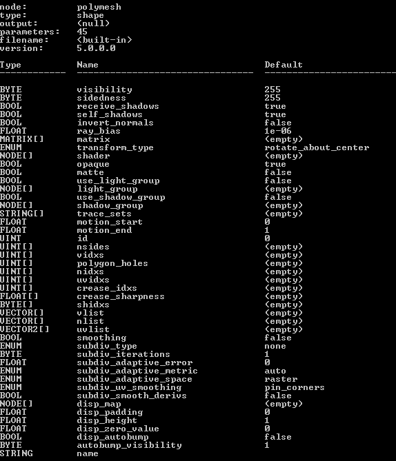
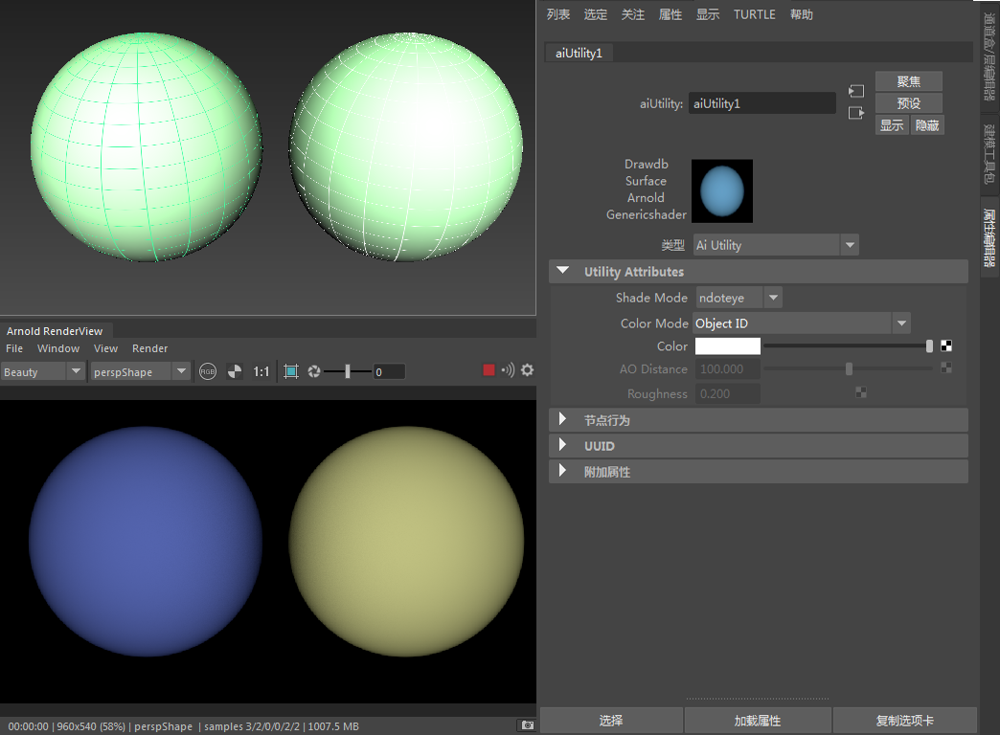
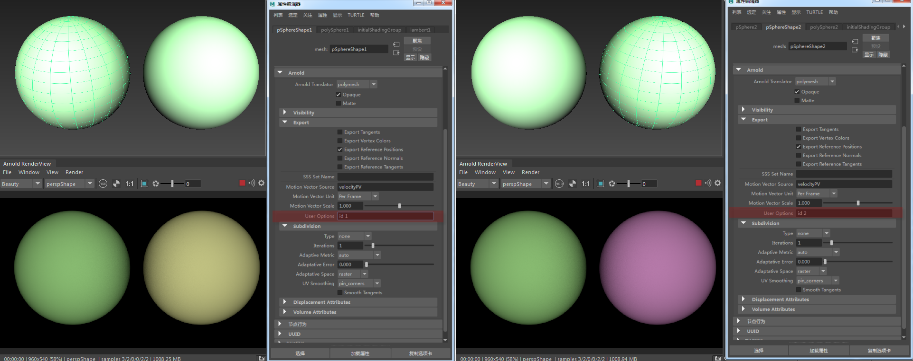
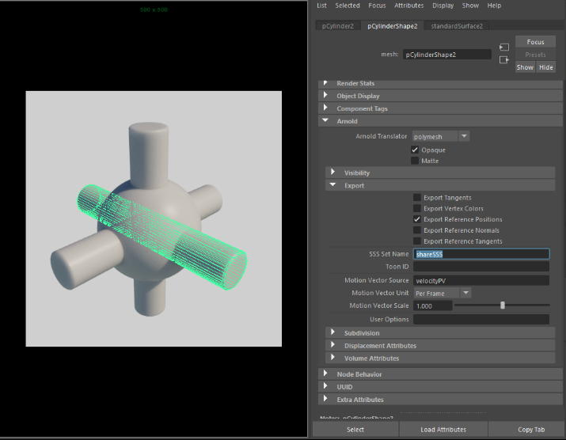

| 延伸阅读 |
|---|
| 有关 Arnold 形状和形状参数的完整文档，请参见《Arnold 用户手册》中的形状。 |

以下公用设置列表可在属性编辑器的 Arnold 部分中找到：
选择将对象作为 polymesh*、mesh_light* 或 procedural 进行渲染。
确定是否将对象视为不透明（透明）。
有关透射和不透明度的详细信息，请单击此处。

启用时，系统会将对象或组变成遮挡蒙版。它仅影响视线。蒙版颜色始终为黑色，并且对象的不透明度将保持不变。着色器将不再在对象上运行，并将输出全黑（包括 Alpha），除非不透明参数设为关闭，在此情况下，着色器只会为了计算不透明度而运行。请注意，在这种情况下，着色器输出的 AOV 也将为黑色。
“蒙版”(Matte)*属性不会蒙版输出内置 AOV（如 *P、N 和 raycount）的 AOV 贡献。

禁用、启用、standard_surface（50% 不透明度）、Alpha 遮罩（50% 不透明度）
这些选项允许您启用或禁用选定对象的各种渲染选项。
您可以创建能够附加到任何对象的任意用户数据。创建后，这些用户数据可以由带有 user 前缀的特定节点在着色时使用。您可以在不同的数据类型（例如颜色和浮点）中找到用于存储用户数据的惯例。例如：

有关如何使用这些着色器的更多示例，请单击此处。

这是一个由字符串构成的通用特性。此字符串字段可以设置为覆盖 Arnold 核心节点的任何参数。例如，这允许您访问和设置当前未在用户界面中显示的 Arnold 核心参数。该特性可应用于多边形网格、头发和灯光。
例如，如果渲染的清晰度至关重要，可以将 texture_max_sharpen 设置为 1.5。另一个示例是，要禁用稀疏纹理，可以将 options.gpu_sparse_textures 设置为 0。
您可以使用 kick 查询 Arnold 核心节点的参数列表。例如，可以通过以下方式获取多边形网格节点的属性名称：
kick -info polymesh
请始终引用核心 Arnold 节点（参见页面底部），而非 Arnold 插件中显示的参数名称。
如果要在 user_options 字符串中设置多个 Arnold 参数，则可以像在实际 ASS 文件中那样使用任何空白（空格、制表符、换行符（例如 \n））进行分隔。

通过 kick 获得的“kick -info polymesh”参数
以下示例说明了如何使用 user_options 更改网格的 id。

要单独更改 ID 颜色，我们可以通过 user_options 进行手动设置。在左侧球体的 Arnold 属性中，“id 1”已添加到 user_options 属性字段。在下面的 Arnold 渲染视图窗口中，您可以看到左侧球体的 ID 颜色已发生变化。通过在相应 user_options 中输入“id 2”，可以为右侧球体设置另一种颜色。

左侧球体在 user_options 中设置了“id 1”右侧球体在 user_options 中设置了“id 2”。
可以将多个对象标记为属于同一 SSS“集”，使照明在对象边界之间变得模糊。
